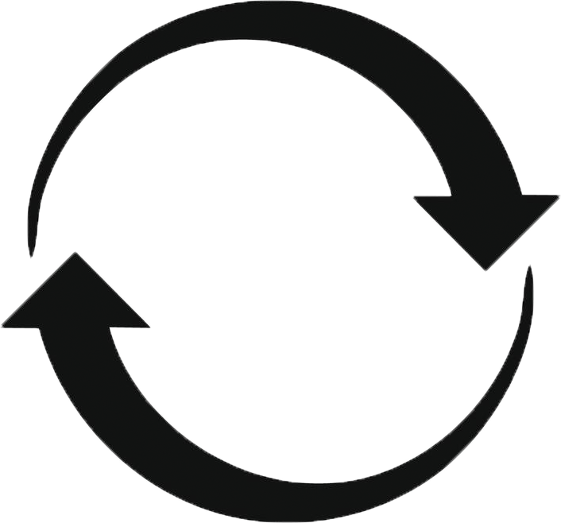
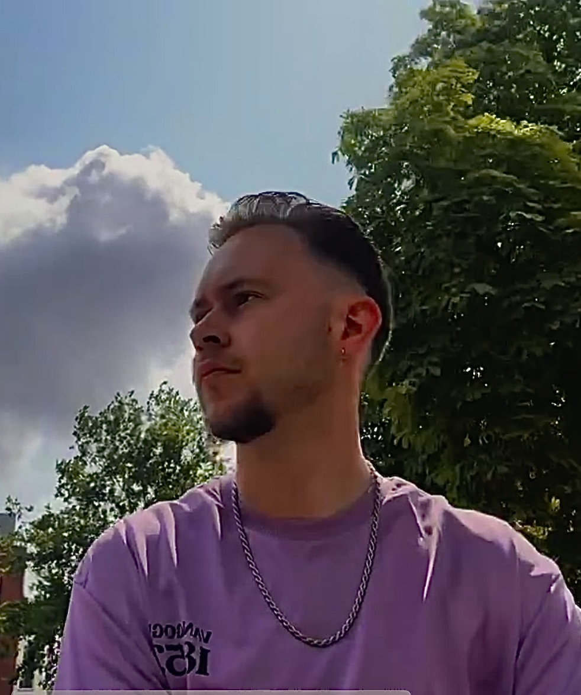

Wie ben ik
Ik ben Boris, 23 jaar en woon in Maastricht. Ik ben een nieuwsgierige en veelzijdige maker met een brede interesse in design, muziek en visuele media. In mijn werk combineer ik creativiteit met een doordachte aanpak: ik observeer, analyseer en vertaal ideeën naar sterke visuele en audiovisuele concepten.
Mijn kracht ligt in het verbinden van verschillende disciplines, van design tot foto, video en interactieve media. Ik werk conceptueel, maar zorg er ook voor dat ideeën ook echt tot leven komen. In samenwerkingen breng ik energie, denk ik actief mee en draag ik bij aan een open en creatieve sfeer.
Ik streef ernaar om werk te maken dat niet alleen visueel sterk is, maar ook gevoel en beleving overbrengt. Daarbij blijf ik mezelf continu ontwikkelen en uitdagen, met als doel om te groeien als creatieve professional.

Reizen
Op mijn 19e ben ik begonnen met reizen en maakte ik mijn eerste grote reis: een tocht door Zuid-Amerika. Ik bezocht onder andere Brazilië, Peru, Ecuador en Colombia. Tijdens deze reis heb ik veel levenservaring opgedaan en mezelf op een andere manier leren kennen, doordat ik continu werd geconfronteerd met nieuwe culturen, mensen en situaties.
In de jaren daarna ben ik blijven reizen, onder andere naar Malta, Egypte en Thailand. Elke bestemming gaf me nieuwe inzichten en versterkte mijn nieuwsgierigheid naar hoe mensen leven en denken in andere delen van de wereld. Reizen is voor mij meer dan verplaatsen; het is observeren, leren en je perspectief blijven verbreden. Ik merk dat deze ervaringen mij sterk hebben gevormd als persoon en als maker. De manier waarop ik kijk, onderzoek en werk is direct beïnvloed door de landen en culturen die ik heb mogen ontdekken.